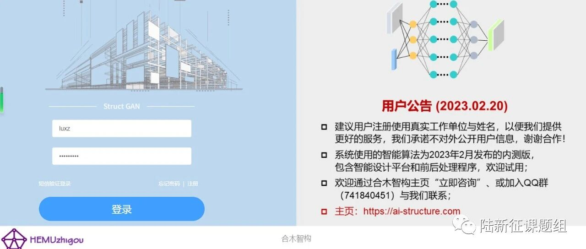

ai-structure.com 剪力墙结构生成式智能设计系统内测邀请
系统简介
视频使用教程：

测试内容

建筑-结构设计的CAD图纸（图纸信息可脱敏，去除项目名称等信息）；
设计过程中的中间文件（包括gdt文件、建筑设计图、结构设计图等）；
工程师设计的剪力墙结构布置方案（绘制在CAD图纸中）；
项目设计用时；
智能设计结果的评价，指出AI设计的不合理之处。
联系方式
QQ群：741840451（欢迎入群交流讨论）
廖文杰：[email protected]；
合木智构网站中也有联系我们选项，欢迎试用
相关论文
Liao WJ, Lu XZ, Huang YL, Zheng Z, Lin YQ, Automated structural design of shear wall residential buildings using generative adversarial networks, Automation in Construction, 2021, 132, 103931. DOI: 10.1016/j.autcon.2021.103931.
Lu XZ, Liao WJ, Zhang Y, Huang YL, Intelligent structural design of shear wall residence using physics-enhanced generative adversarial networks, Earthquake Engineering & Structural Dynamics, 2022, 51(7): 1657-1676. DOI: 10.1002/eqe.3632.
Zhao PJ, Liao WJ, Xue HJ, Lu XZ, Intelligent design method for beam and slab of shear wall structure based on deep learning, Journal of Building Engineering, 2022, 57: 104838. DOI: 10.1016/j.jobe.2022.104838.
Liao WJ, Huang YL, Zheng Z, Lu XZ, Intelligent generative structural design method for shear-wall building based on “fused-text-image-to-image” generative adversarial networks, Expert Systems with Applications, 2022, 118530, DOI: 10.1016/j.eswa.2022.118530.
Fei YF, Liao WJ, Zhang S, Yin PF, Han B, Zhao PJ, Chen XY, Lu XZ, Integrated schematic design method for shear wall structures: a practical application of generative adversarial networks, Buildings, 2022, 12(9): 1295. DOI: 10.3390/buildings1209129.
Fei YF, Liao WJ, Huang YL, Lu XZ, Knowledge-enhanced generative adversarial networks for schematic design of framed tube structures, Automation in Construction, 2022, 144: 104619. DOI: 10.1016/j.autcon.2022.104619.
Zhao PJ, Liao WJ, Huang YL, Lu XZ, Intelligent design of shear wall layout based on attention-enhanced generative adversarial network, Engineering Structures, 2023, 274, 115170. DOI: 10.1016/j.engstruct.2022.115170.
Zhao PJ, Liao WJ, Huang YL, Lu XZ, Intelligent beam layout design for frame structure based on graph neural networks, Journal of Building Engineering, 2023, 63, Part A: 105499. DOI: 10.1016/j.jobe.2022.105499.
Zhao PJ, Liao WJ, Huang YL, Lu XZ, Intelligent design of shear wall layout based on graph neural networks, Advanced Engineering Informatics, 2023, 55, 101886, DOI: 10.1016/j.aei.2023.101886

相关资料
学术报告视频
公众号文章
---End---